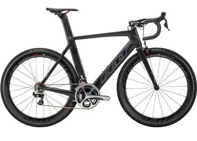

Featured Products

FELT AR FRD
Price: $12,999.00
The 2015 AR FRD continues to be the world’s leader. Designed and developed using CFD software and in the wind tunnel, this aero road bike is up to 31% faster than typical round tube road frames. Constructed from Felt Aero Road UHC Ultimate + TeXtreme carbon fiber and using MMC with InsideOut construction the AR FRD framset is competition ready.
KONA SUPER JAKE
Price: $4499
Introduced as a completely redesigned bike last year, the disc-equipped Super Jake enjoyed big success on the 2013/14 race circuit, thanks to Kona Team rider Helen Wyman’s winning ways. The eight-time UK National Champion is currently 2nd in World Cup rankings and placed 3rd at the 2014 World Championships. Featuring a super-light, very precise and wickedly quick Carbon CX Race monocoque frame and fork spec’d with top-drawer components, it’s no surprise the Super Jake is comfortable way out front.